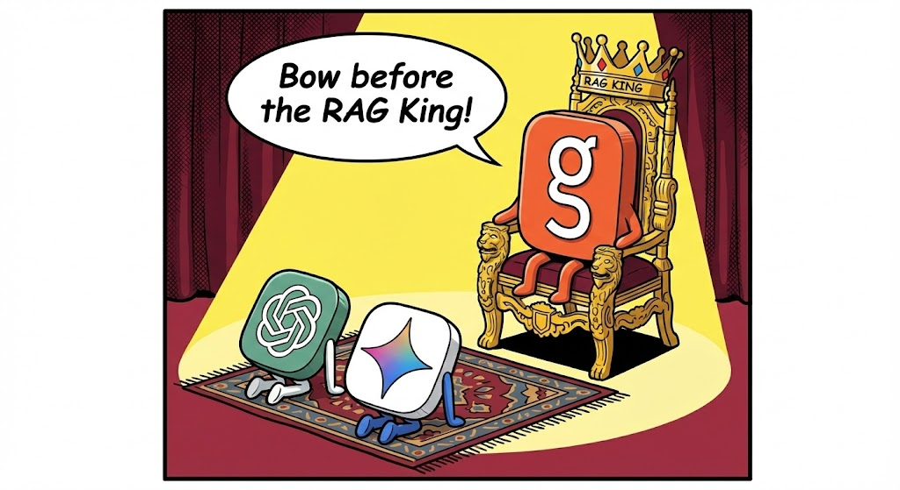

NLP · RAG Pipeline
BYO RAG

Overview
Built for a certification through Ready Tensor, this is a fully modular RAG pipeline. The Gradio interface lets users chat with a bot connected to a vector store built from a course textbook, but the repository is designed to be swapped out at every layer.
Users can upload their own source documents, modify prompts, or use the built-in web scraping module to pull content from any site they have access to. The pipeline was built to be a learning tool and a reusable template — not a one-off demo.
Tech Stack
Web Scraping
Tavily Web API
Groq LLM
RAG Pipeline
LangChain
Chroma DB
Gemma-300m Embeddings
Groq (GPT-oss-20b)
Interface
Gradio
Python
Use Cases
- Students can upload textbooks or course material to ask questions — particularly ones that seek to connect concepts across chapters, which are hard to surface by searching or skimming.
- Companies can combine the scraping modules and web access with their own documentation to implement a customer-facing chatbot grounded in their own content.
- Developers can use the repository as a template for any RAG application, swapping sources, embedding models, and LLM providers with minimal changes.